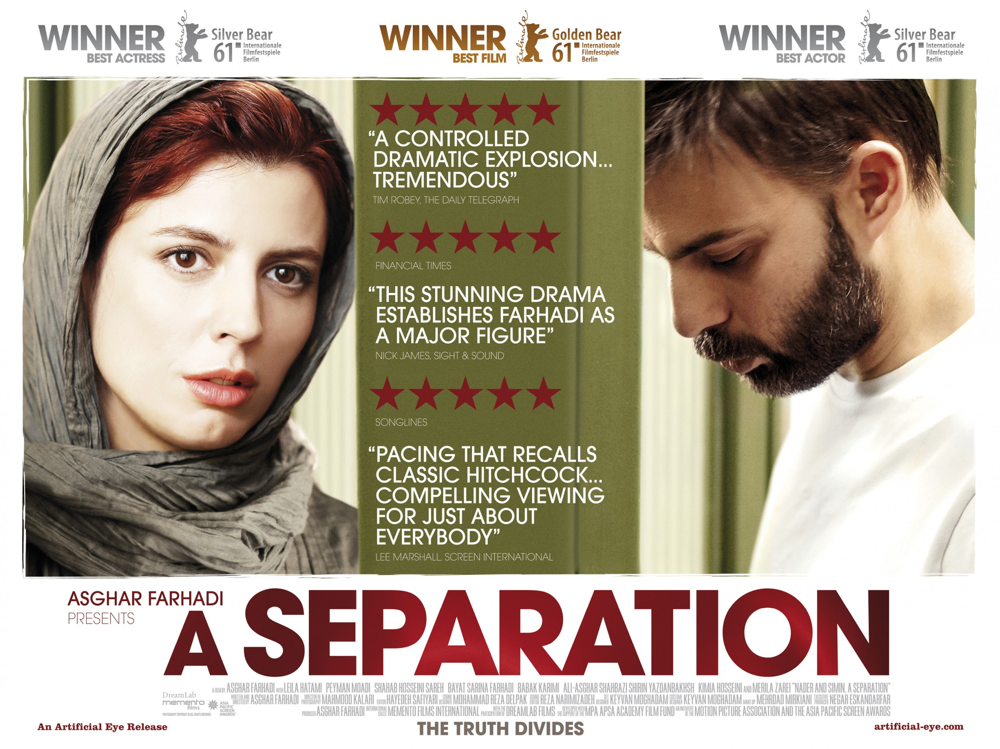

THE SEPARATION OF NADAR AND SIMIN
The separation adalah film yang bagus tentang kehidupan nyata. Film ini menarik disaat kita saat ini dibanjiri oleh film-film fiksi ilmiah. Misalnya, ada beberapa adegan dalam film ini yang sangat mengesankan, ketika Nader sedang mencuci tubuh ayahnya sambil menangis yang menunjukkan kepada kita bagaimana seorang anak mencintai ayahnya tidak peduli dia terlalu tua atau sakit. Atau ketika Termeh bertanya kepada ayahnya tentang alasan dia berbohong di pengadilan, dimana kita dapat memahami bagaimana anak-anak memonitor perilaku orang tua mereka sebagai panutan yang dapat dipercaya.
Dari tokoh-tokohnya kita dapat mengidentifikasi Nader dan Simin sebagai Muslim moderat, dan Razieh sebagai perempuan yang sangat religius dimana dia mempertanyakan apakah ia dapat mengganti celana seorang pria, meskipun ia sangat tua dan sakit. Dalam satu kasus yang terjadi, Razieh diberi tugas merawat orang tua yang menderita Alzeimer. Dia buang air dicelana. Saat itu juga Razieh langsung dihadapkan dengan aturan agama, masalah aurat, masalah muhrim-bukan muhrim, dan masalah lainnya yang terkait aturan agama; sementara disisi lain dia harus membantu membersihkan orang tua tersebut.
Mari kita awali dari hal yang menarik. Satu dialog yang menurut saya menarik di film ini adalah dialog Somayeh dengan Nader, ayahnya, saat main tebak-tebakan.
- Berikan versi Persia-nya, Model?
- Nemunak.
- Kompos?
- Khoshaab.
- Jaminan?
- Kompensasi, zemanat.
- Itu bahasa Arab, bukan Persia.
- Guruku bilang begitu.
- Jangan katakan itu lagi. Salah tetap salah. Tak peduli siapa yang mengatakannya atau di mana itu tertulis.
Untuk "jaminan", tulislah...
- Jika aku tulis yang lain, nilaiku akan dikurangi.
- Tak masalah, biarkan saja.
- Tulis "Poshtvaneh".
- Poshtvaneh.
***
Kita akan mendiskusikan beberapa aspek dalam film ini. Film ini berlangsung di Iran masa kini, sebuah negara modern yang mencoba untuk hidup di bawah hukum Islam. Salah satu penerapannya, di Iran ada semacam semacam "lembaga fatwa", atau entah apa sebutan yang sebenarnya, yang setiap saat bisa dihubungi sebagai rujukan penyelesaian dari perspektif agama dalam kasus-kasus spesifik. Hal ini terlihat dari apa yang ditanyakan Razieh sesaat sebelum menggantikan celana orang tua yang telah kita sebutkan sebelumnya.
"Halo. Aku punya pertanyaan, Aku bekerja merawat seorang pria tua, Aku ingin bertanya... Maaf, tapi ia buang air di celana. Jika aku ganti pakaiannya, dosa atau tidak?. Tidak ada siapapun di sini. Usianya sekitar 70 atau 80 tahun, dia sudah pikun... Masalahnya? Dia sudah begini selama setengah jam. Bolehkah?"
Sayangnya kita tidak mengetahui jawaban secara harfiah pertanyaan tersebut. Tapi melihat Razieh mampu melakukannya kita dapat menyimpulkan bahwa hukum dapat diaplikasikan secara fleksibel.
#1
Film ini mencakup banyak hal, kasus dalam keluarga yang kompleks mulai kasus perceraian, pengasuhan anak, proses di pengadilan, hingga perawat perempuan, yang masing-masing dihadap-hadapkan dengan agama. Sebagaimana kita sebutkan sebelumnya, film ini memberi gambaran Iran sebagai negara Republik yang berlandaskan Islam. Kita akan melihat bagaimana proses pengadilan diselesaikan, sumpah atas nama Imam Hussein (tokoh kita adalah Syi'ah), dan kasus-kasus yang tidak bisa dinilai secara hitam-putih.
#2
Quotes terbaik menurut saya adalah "What is wrong is wrong, no matter who said it or where it's written." Dalam konteks pembahasan kita misalnya, tidak peduli, sekali lagi misalnya, apakah yang mengeluarkan fatwa itu MUI, yang memberi pernyataan itu Menteri Agama, ulama, ustadz, dan sebagainya jika itu "tidak sesuai" ya tidak harus diikuti. Dalam kebutuhan fikih yang kontekstual, jika hukum dalam kitab fikih tidak relevan ya semestinya tidak digunakan lagi. Kalau dalam film ini, salah tetap salah. Tak peduli siapa yang mengatakannya atau di mana itu tertulis. Sepertinya komentar saya ini terlalu dipaksakan :).
Ada hal-hal yang menurut saya menarik. Karenanya saya menyarankan menonton ini. Film kompleks yang bernuansa tentang runtuhnya hubungan antara orang-orang cerdas yang berkehendak baik. Seorang istri yang bermaksud memberikan putri mereka kehidupan yang lebih baik (bukan berarti kehidupan mereka di Iran itu buruk, tapi rasanya dalam pertimbangan tertentu janji kebebasan yang ditawarkan dunia Barat lebih menarik), sementara suami menolak langkah itu karena dia merasa bahwa dia perlu untuk merawat ayahnya yang sakit, yang menderita Altzheimers parah.
#3
Tugasnya, buatlah review tentang film ini. Tapi bukan tentang alur cerita, akting, dan sebagainya yang sebaiknya ditekankan. Kamu dapat mengomentari hal lainnya tentang perceraian, pengasuhan orang tua, atau mengambil sikap setuju atau tidak setuju terhadap tokoh yang ada di film ini, atau mengomentari tentang bagaimana teks keagamaan dihadapkan dengan tuntutan realitas, perempuan yang mengajukan cerai, atau hal-hal lainnya. Dapat juga kamu mengomentari tentang negara Iran, tentang sistem peradilan di Iran, tentang masalah-masalah dalam keluarga, atau tentang gadis kecil Termeh dan Somayeh. Kamu dapat mengomentari satu atau banyak hal.
Misalnya, bagaimana gadis kecil yang cerdas ini terjebak dalam sebuah masyarakat yang kaku. Bagaimana jika hukum diberlakukan secara mutlak, dan bagaimana ketika itu dibentuk dan didasari oleh keyakinan agama yang mendasar tidak fleksibel akan berbahaya bagi warga negara. Atau melihat Iran sebagai negara yang aneh dengan budaya aneh, jika itu terlihat aneh. Jika tidak, kamu bisa memberikan gambaran tentang wawasan budaya yang berbeda dari sudut pandang yang berbeda. Atau melihat secara umum terlepas apa yang benar dan apa yang salah, bahwa cobaan dan penderitaan didalam keluarga di Iran modern ini secara mendasar tidak jauh berbeda dari kehidupan kita sendiri.
Selamat menonton :).
/p>